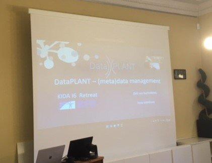

DataPLANT recently participated in the KIDA I6 Retreat, held on April 24th and 25th, 2023 in Berlin Alt-Marienfelde at the German Federal Institute for Risk Assessment, 4SZ Study Centre for Food Chain Modelling and Artificial Intelligence, Department of Biological Safety. The retreat aimed to generate synergies between projects, with several topics presented during the event, including:
- Demo Linked Data PoC with Metaphactory Software (BfR)
- DataPLANT Concepts, Tools and Services including demonstration
- Developments ZB MED (LookUp Services, Ontologies, Widgets)
- Linked Data PoC BVL * MAPFI project (including discussion)
- Linked Data PoC FLI
- Linked Data PoC JKI
- Planned KIDA work contracts (BfR)
- Collaborations and Networking: FAIRagro, DataPLANT, NFDI4Chem
- AOB: Services offered by ZB MED (Juliane Fluck), presentation of FAIRagro project, technical infrastructure (Git etc.)
[]
On the sidelines of the event, there was a close exchange with NFDI4Health and considerations for cooperation in the context of ontologies. We presented the ARC concept and layout, the presentation as a Fair Digital Object and RO-Crate. The ARC was set into context of Git and GitLab as well as how the initialization would run through the tools provided. Further on the use of Swate got demonstrated as well as the workflows for ontology update and handling.
In addition, there was a close exchange with NFDI4Health on the sidelines of the event, with considerations for cooperation in the context of ontologies. The ARC conceptand layout were presented as a Fair Digital Object and RO-Crate, and set into context of Git and GitLab, along with the initialization process. The use of Swate was also demonstrated, along with the workflows for ontology update and handling.